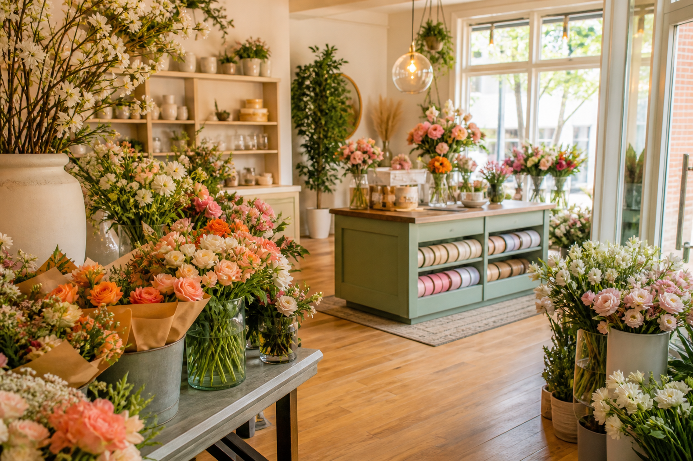
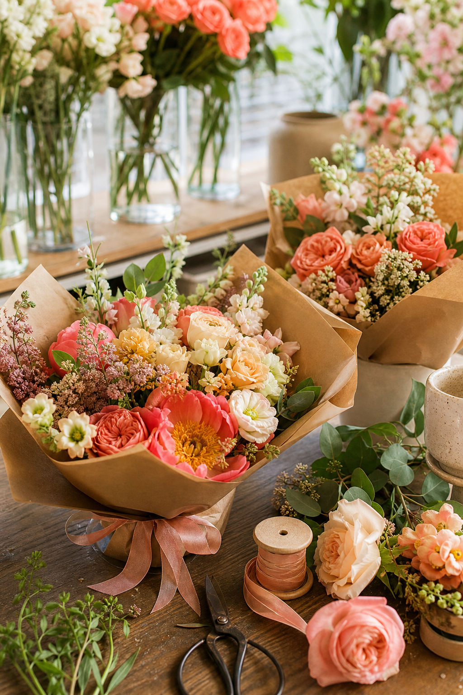
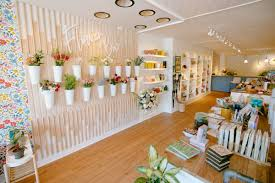
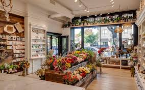
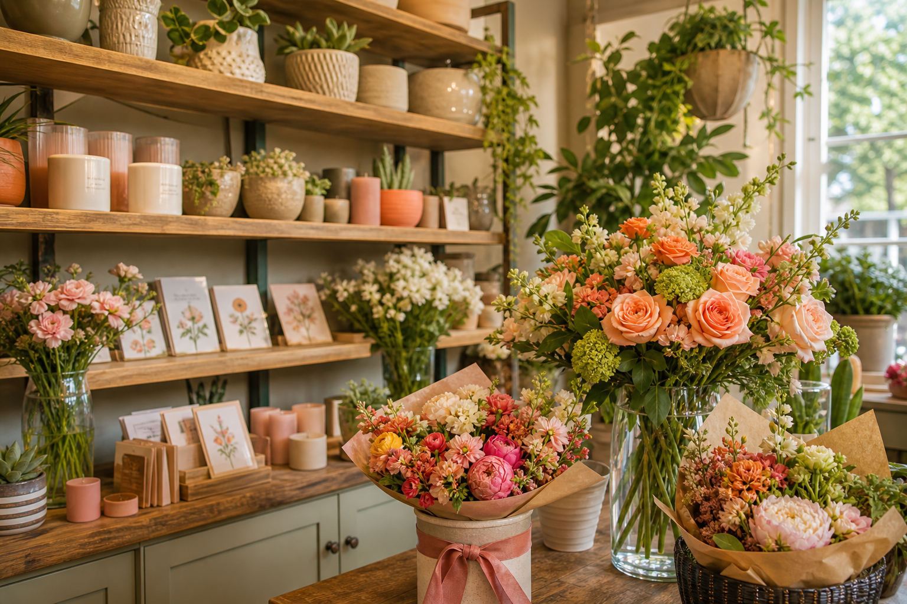
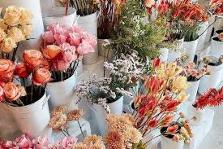

Daily bouquets
Quick pickup flowers, thoughtful gifts, and grab-and-go arrangements for any moment.
Fresh flowers. Beautiful spaces. Omaha charm.
From hand-tied bouquets to wedding florals and thoughtful weekly stems, Prairie Petal Omaha creates arrangements that feel abundant, inviting, and full of color. Built around your real shop photography, the experience already feels local and personal.


A bright, boutique Omaha flower experience designed for everyday gifting, event styling, and walk-in inspiration.
Inside the shop
Your photos already tell a strong story: an airy storefront, curated displays, and buckets of fresh stems that feel generous rather than formal. This layout uses that visual warmth as the centerpiece instead of hiding it behind generic graphics.

Photo gallery



What you can offer
Quick pickup flowers, thoughtful gifts, and grab-and-go arrangements for any moment.
Bridal flowers, installations, dinner party florals, and custom proposals for celebrations.
Weekly or monthly floral refreshes for homes, offices, lobbies, and hospitality spaces.
“Flowers sell best when the space feels alive. Your photography already does that work.”
Visit the studio
Start an order